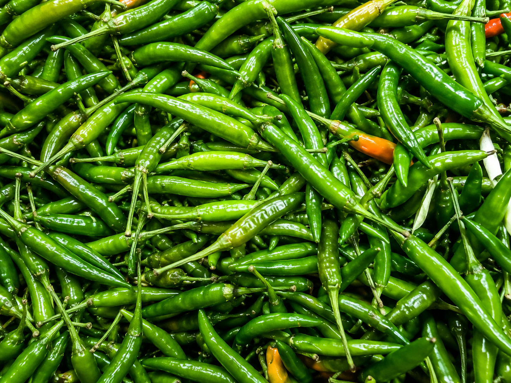

Fresh Green Chilli Exporter From India
Fresh Indian green chilli supplied for vegetable importers, wholesalers, distributors, and food service buyers.
Request Quote
Export Grade Specifications
| Specification | Export Grade Details |
|---|---|
| Product Name | Indian Green Chilli |
| Origin | India |
| Variety | G4 / Teja / As per buyer requirement |
| Grade | Export Quality |
| Color | Fresh Natural Green |
| Size | As per buyer requirement |
| Packaging | 3kg / 5kg Corrugated Export Cartons |
| Shelf Life | Depending on storage and transit conditions |
| Cold Chain | Available as required |
| Shipment Terms | FOB / CIF Available |
| HSN Code | 07096010 |
Built for International Buyers
Our green chilli supply is suitable for vegetable importers, wholesalers, food service distributors, ethnic grocery suppliers, and retail chains.
How We Handle Your Order
We confirm variety, size, quantity, packaging, and destination.
Fresh chilli supply is coordinated from suitable Indian suppliers.
Product is sorted based on buyer quality expectations.
Carton or buyer-specific export packaging is arranged.
Export documentation support is coordinated.
Shipment support is arranged based on buyer preference.
Frequently Asked Questions
Can you supply green chilli in cartons?
Yes, carton packaging can be arranged based on buyer requirement.
Can you coordinate quality selection?
Yes, sorting and buyer-specific quality coordination can be arranged.
Who imports fresh green chilli?
Vegetable importers, wholesalers, food service distributors, and grocery suppliers commonly import green chilli.
Request a Quote for Fresh Green Chilli Exporter From India
Share your required variety, quantity, destination port, and packaging type. Our team will respond with suitable sourcing and export options.
Request Quote